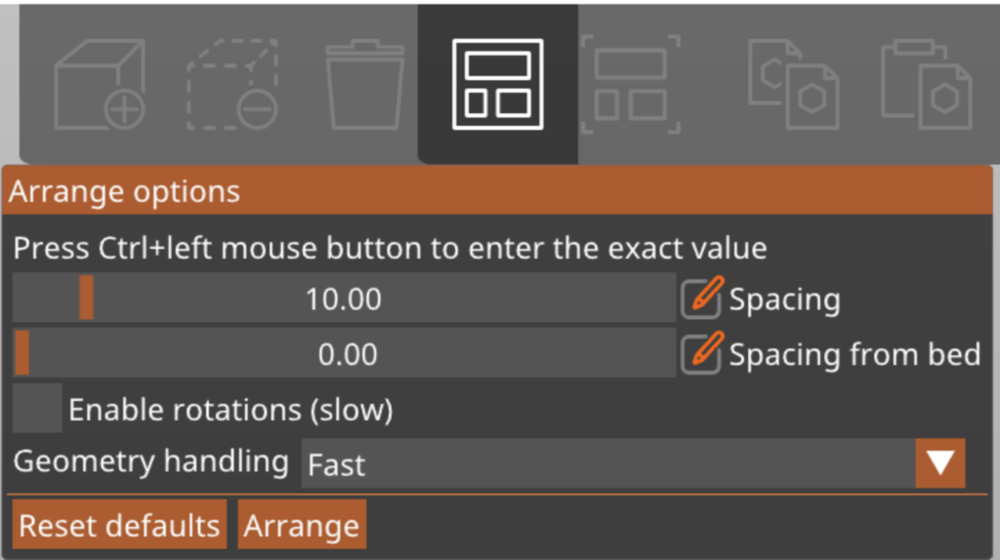
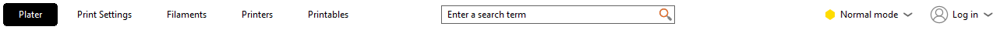

Now we will continue with the middle upper edge of the window. you will find the central icon bar, which contains a variety of tools for interacting with your models. While there are many useful buttons available, we will focus on just two for this training: Add and Arrange All. Most of the other buttons are pretty self explanatory if you hover your mouse over it without clicking, You are encouraged to research and experiment with the other buttons if you would like.
As we have already discussed in earlier pages, the Add button allows you to import a model file from your computer and place it onto the print bed. This is typically the first step in preparing a print. Note that you can print models from more different files at once.
Using this button, you can automatically arrange all models in your project across up to nine print beds. The software optimizes the placement to minimize unnecessary nozzle movement and improve printing efficiency.

If you right-click the Auto Arrange button, a small window with additional settings will appear. In this menu, you can adjust the minimum distance between models and from the edge of the print bed. You can also enable rotation, which allows the software to better fit models onto the bed by rotating them as needed. Keep in mind that enabling rotation can increase computation time, especially when arranging a large number of models.

Under these tabs, you will find a wide range of additional settings that allow for even greater control over your prints. However, changing many of these settings can lead to print failures or potentially damage the machines.
You are welcome to explore these options, but do not make any changes unless you have been given specific instructions.